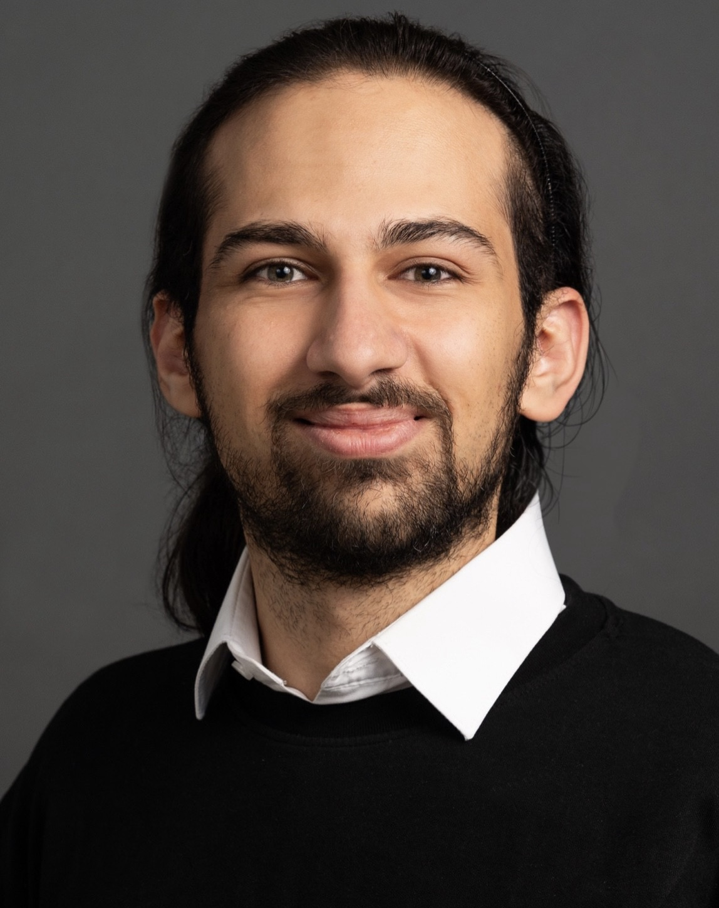

Über mich
Ich bin Masterstudent im Studiengang
Data Engineering and Analytics
mit Schwerpunkt Computer Vision an der Technischen
Universität München (TUM), vollständig gefördert durch den DAAD.
Derzeit schließe ich meine Masterarbeit zum Thema 3D-Objekterkennung mittels Gaussian Splatting in der Computer Vision Gruppe unter der Leitung von Prof. Daniel Cremers ab.
Zusätzlich arbeite ich als studentischer Forscher im Bereich Computer Vision am Fraunhofer-Institut für Kognitive Systeme (IKS), wo ich mich auf multimodale 3D-Wahrnehmung, Sensorfusion und robuste Echtzeit-Personenerkennung für die Robotik konzentriere.
Meinen Bachelor of Science in Informatik habe ich im Juni 2022 an der American University of Beirut (AUB) abgeschlossen, vollständig finanziert durch das
Tomorrow's Leaders Program.
Während meines Bachelorstudiums hatte ich die Möglichkeit, ein Auslandssemester an der University of Pennsylvania zu verbringen.
Im Laufe meines akademischen Werdegangs habe ich als studentischer Forscher an der AUB und der TUM sowie als Data Scientist bei Infineon Technologies gearbeitet.